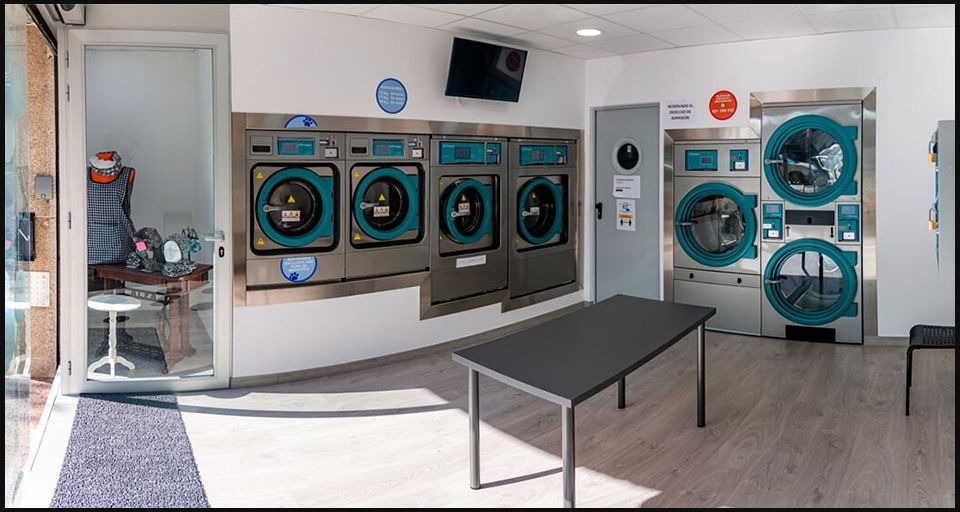
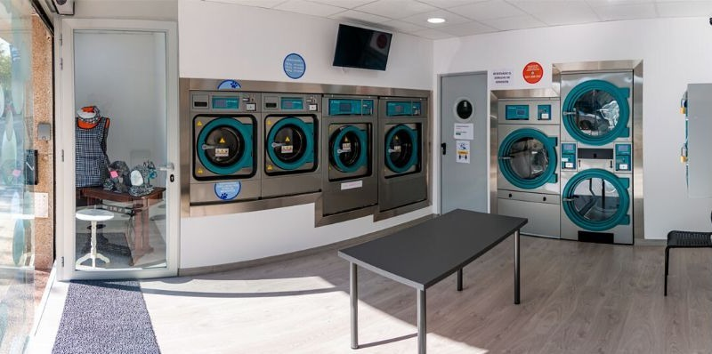
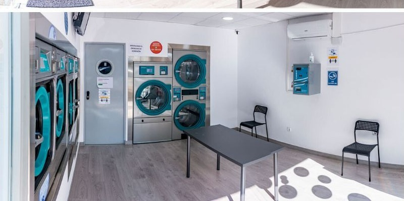

Lavado autoservicio
Para ropa diaria, mantas y edredones. El jabón y el suavizante ya están incluidos.
Desde 4€Tu lavandería de confianza en Abrera
Lava y seca tu ropa, edredones y textiles de mascotas en un espacio cómodo, claro y fácil de usar.

Estamos en AbreraPasseig de l'Estació, 21
Todo lo que necesitas
Máquinas modernas, ciclos sencillos y un espacio cuidado para que termines antes y sigas con tu día.
Para ropa diaria, mantas y edredones. El jabón y el suavizante ya están incluidos.
Desde 4€Secadoras de 17 kg para llevarte tu ropa seca y lista en mucho menos tiempo.
1€ / 15 minMáquina exclusiva para mantas, camas, toallas y accesorios de tus animales.
Lavado separadoTarifas claras
Sin sorpresas: ves el precio antes de empezar.
Perfecta para la colada diaria.
Para mantas y cargas medianas.
Para edredones y cargas grandes.
Exclusiva para textiles de mascotas.
Secadora de 17 kgTermina tu colada de forma rápida
1€cada 15 minutos
Todos los lavados incluyen jabón y suavizante.
Un espacio para ellos
Lava mantas, camas, toallas y accesorios en una máquina reservada exclusivamente para textiles de mascotas.
El local real
Un espacio climatizado, fácil de reconocer y con todo a la vista para que te sientas cómodo al llegar.


Así de sencillo
No necesitas reservar. Ven cuando mejor te vaya dentro de nuestro horario.
Según el tipo y la cantidad de ropa.
Sigue las indicaciones visibles en el local.
Limpia, seca y lista para volver a casa.
Ven cuando quieras
Cerca de casa, con aparcamiento en los alrededores y abierto todos los días.
¿Tienes alguna duda?
Escríbenos por WhatsApp y te ayudamos con lo que necesites.